Einblick in 4000 wegweisende Arbeiten zum Prompt Engineering.
Dieser Artikel ist eine prägnante Transkription von diesem YouTube-Video.
Die umfassende Analyse von 4000 Arbeiten wurde durch Experimente mit Claude, ChatGPT und OpenRouter durchgeführt. Insgesamt wurden 600$ (Januar 2025) investiert.
Im Folgenden sind die nützlichsten Konzepte aufgeführt, die aus diesen Studien extrahiert wurden.
Rollenbasiertes Prompting (Role-Based Prompting)
Es ist wichtig, nicht nur eine Rolle anzugeben, sondern eine spezifische Rolle, die bei der jeweiligen Aufgabe hilft.
Beispiel: Anstatt "Du bist Mathematiker." zu schreiben, formuliert man besser "Du bist Experte für lineare Algebra."
Eine Erweiterung davon ist das MoE-Modell (Mixture of Experts), bei dem die Aufgabe in Schritte aufgeteilt wird und jedem Schritt eine bestimmte Expertenrolle zugewiesen wird.
Beispiel:
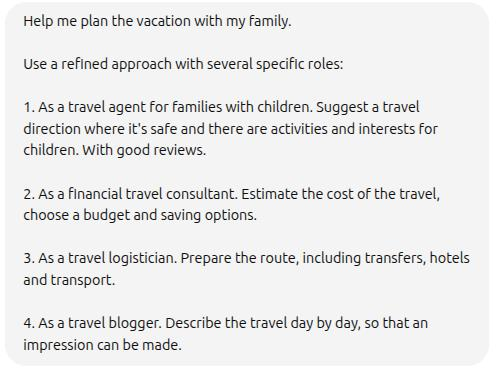CauCoT (Kausale Chain of Thought)
Klassisches CoT-Beispiel:
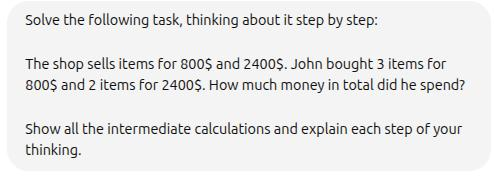Causal CoT geht einen Schritt weiter. Anstatt das LLM die Schritte selbst entwickeln zu lassen, geben wir die Schritte explizit vor.
Beispiel:
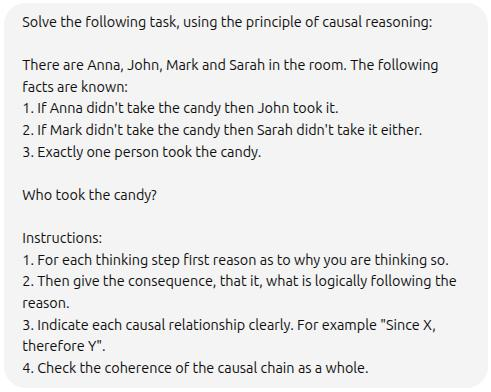Strukturierte CoT (Structured CoT)
Ein zusätzlicher Schritt: Vor der Hauptaufgabe bitten wir das LLM zu analysieren, was notwendig ist, um diese Aufgabe zu lösen.
Beispiel:
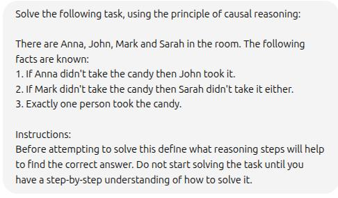Und hier das Ergebnis:
- 🔹 Schritt 1: Die logische Struktur jeder Aussage verstehen
- 🔹 Schritt 2: Die Bedeutung der Ausschlussregel erfassen
- 🔹 Schritt 3: Für jede Person (A, J, M, S) annehmen, dass sie die Süßigkeit genommen hat
- 🔹 Schritt 4: Kausale Ketten explizit beibehalten
- 🔹 Schritt 5: Durch Ausschluss und logische Notwendigkeit zum Ergebnis kommen
Diese Ausgabe kann dann weiter im LLM über CauCoT verwendet werden.
Program of Thoughts CoT
Ähnlich wie CauCoT, jedoch fordern wir das LLM auf, Code zu schreiben, um die Aufgabe zu lösen – statt natürlicher Sprache.
Beispiel:
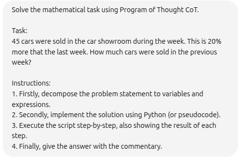Tree of Thought (ToT)
Diese Technik erweitert die lineare CoT zu einer Baumstruktur, in der verschiedene Lösungswege möglich sind. Das LLM kann bei Fehlern zu früheren Schritten zurückkehren.
Beispiel:
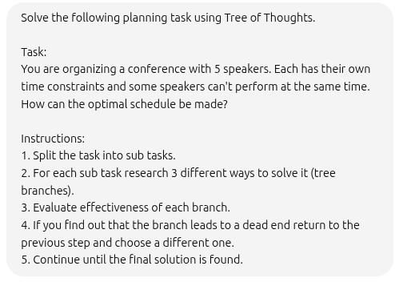Kontrastives Denken (Contrast Reasoning)
Das LLM soll nicht nur die richtige Antwort geben, sondern auch eine falsche Antwort samt Begründung erzeugen.
Das Erzeugen gegensätzlicher Gedankengänge zwingt das Modell dazu, die richtige Lösung klar von den falschen abzugrenzen.
Beispiel:
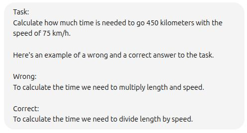Chain of Draft (CoD)
Eine vereinfachte Version der CoT mit minimalem, aber nützlichem Gedankengut (etwa ein Satz pro Schritt). Ähnliche Genauigkeit wie CoT, aber mit weniger Tokenverbrauch.
Beispiel:
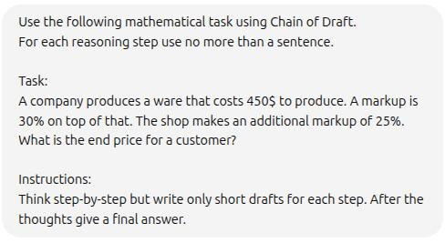Kette des Denkens (Chain of Reasoning, CoR)
Verschiedene Denkstile werden kombiniert: natürliche Sprache, algorithmisch, symbolisch.
Beispiel:
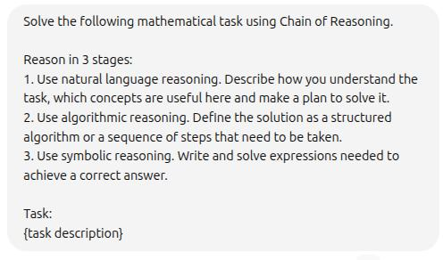Selbstverbesserung (Self-Refine)
Selbsterklärend: Wir lassen das LLM seine eigene Antwort bewerten und reflektieren.
Beispiel:
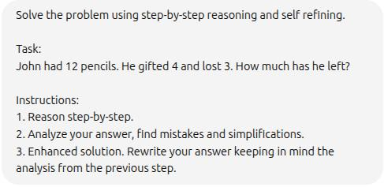Eine andere Variante ist es, eine Bewertungsmetrik anzugeben, nach der das Modell seine Sicherheit beurteilen kann.
Beispiel:
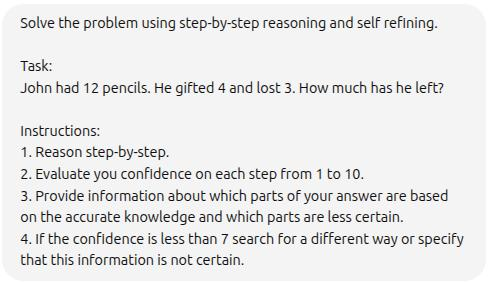Verifikationskette (Chain of Verification, CoV)
Eine Methode, die CoT und Self-Refine kombiniert.
Beispiel:
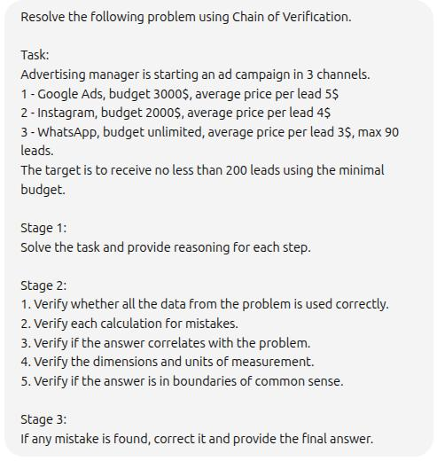Sandwich-Technik
Die Reihenfolge der Informationen im Prompt ist entscheidend. Die wichtigsten Inhalte kommen an den Anfang und ans Ende.
Beispiel:
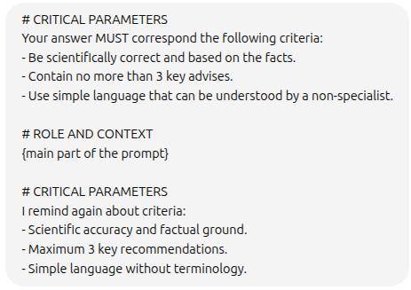Prioritäten-Hierarchie (Priority Hierarchy)
Elemente werden nach Wichtigkeit sortiert – vom Wichtigsten zum Unwichtigsten.
Beispiel:
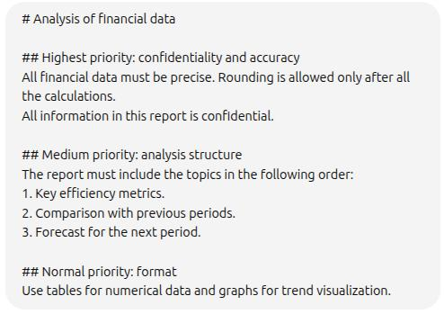Kaskaden-Methode (Cascade Method)
Informationen werden vom Allgemeinen zum Konkreten strukturiert – wie ein Trichter der Detaillierung.
Beispiel:
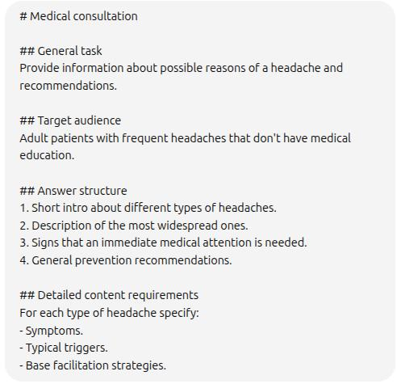Zwischenzusammenfassungen (Intermediate summarization)
Kurze Zusammenfassungen nach jedem bedeutenden Informationsblock einfügen.
Beispiel:
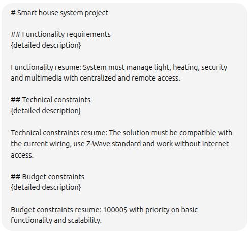Kontext-Aufgabe-Regler (Context-Task-Regulators)
Die optimale Struktur des Prompts ist: Rolle → Kontext → Aufgabe → Format → Einschränkungen.
Beispiel:
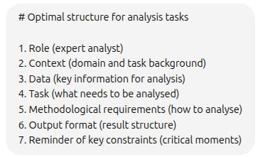